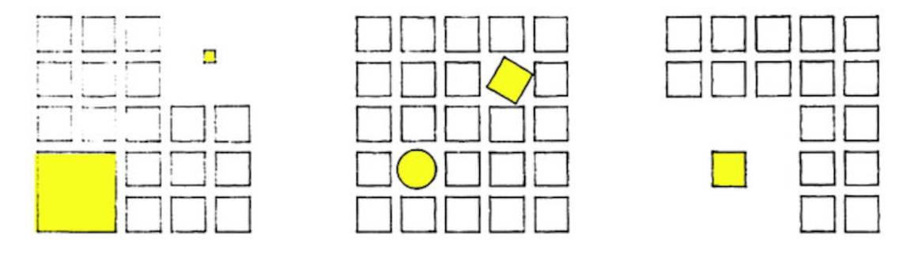

Como definir el espacio
Poder disennar un espacio sobrecae en la habilidad de arreglar una serie de entidades elementales de forma adecuada. Reducir las dimensiones del espacio a dos dimensiones nos ayuda organizar objetos. La simplicidad de menas dimensiones hacen posible que la creatividad tome las riendas del disenno y creen espacios con sustancia. Es por esto que es imperativo la proficiencia en manejar el dibujo bidimensional.
El espacio tiene tres dimensiones. Para que nosotros los humanos podamos experimentarlo se requiere de una cuarta dimension, el tiempo. Cuando reducimos esas cuatro dimensiones a 3 dimensiones espaciales obetenemos una fotografia en tres dimensiones del objeto en cuestion. Si reducimos aun mas las dimensiones del espacio a dos dimensiones adquirimos una lasca del espacio, el cual contiene toda la informacion sobre una superficie plana. Cuando reducimos las dimensiones, la cantidad de area para trabajar sobre el espacio disminuye exponencialmente, sin embargo, nuestro control sobre las dimensiones botadas sigue en pie. Esto nos deja manipular y controlar el espacio de forma mas controlada, el papel bidimensional es la consola de la grua cual piloteamos para manejar los objetos en dos dimensiones.
La forma mas comun y directa de manejar el espacio es un dibujo de planta o de perspectiva. En el cual solo mostramos la superficie vista ortogonalmente hacia la piel del objeto o como un punto al cual se le proyecta la imagen de sus alrededores. Esto significa que el resto de la informacion del objeto se pierde si solo utilizamos 1 punto de vista. Esto por consecuencia tiene solo 1 solucion, y esa es crear mas puntos de vistas para poder apreciar el 100% del espacio que se esta creando o estudiando. Enfocandonos especificamente en el aspecto de crear espacios, no hay de otra que usar nuestra creatividad para interpretar lo que el objeto quiere hacer si se proyectara a tres dimensiones. Al igual que para poder experimentar las tres dimensiones de espacio necesitamos la cuarta dimension, el tiempo, para experimentar el 100% de la faceta de nuestro objeto tenemos que implementar nuestro pensamiento y el uso de los dibujos bidimensionales.
Tras la sicologia del Gestalt vemos que las interpretaciones de nuestros alrededores pueden ser diluidas a un punnado de orientaciones y arreglos bidimensionales. Sin esto no podriamos explicar nuestros alrededores o hablar del porque es que algunos arreglos son objetivamente mejor que otros. Cuando tiramos una linea en el papel creamos una obra de arte nunca mas vista en la historia de la humanidad, es imperativo que utilizemos nuestro conocimiento para interepretar las lineas en el papel y crear espacios con sustancia.